01 - Становлення та розвиток науки про дані
Вступ у Data Science
Ігор Мірошниченко
КНЕУ::ІІТЕ
Про мене
- Мірошниченко Ігор Вікторович
- кандидат економічних наук, доцент
- доцент кафедри математичного моделювання і статистики КНЕУ
- викладач Міжнародного інституту бізнесу (MBA)
ihor.miroshnychenko@kneu.ua
Що таке наука про дані?
Елементи науки про дані
Як і будь-яка нова сфера, вона ще чітко невизначена, але включає елементи:
Розвідувальний аналіз та візуалізація даних
Машинне навчання та статистика
Високопродуктивні обчислювальні технології
Що таке наука про дані?
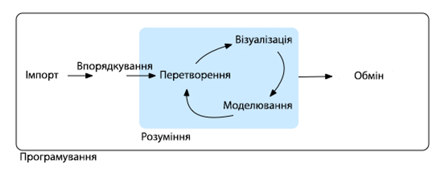Чому наука про дані?
Нові технології дозволяють збирати величезні обсяги даних.
Обчислення дозволяють аналізувати дані у постійно зростаючих масштабах.
Багато прикладів успіху (Google, Facebook, Netfiks, гедж-фонди, Moneyball, …), що зарекомендували себе, як потужний напрямок сучасної аналітики даних.
Google Ngram
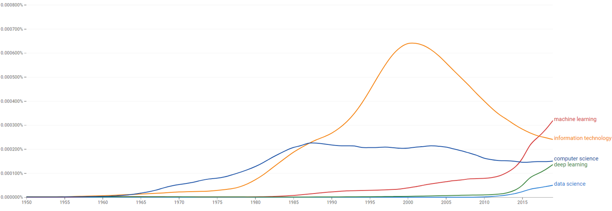Навички для науки про дані
НАВИЧКИ ДЛЯ НАУКИ ПРО ДАНІ

Формування питань до даних
Базові питання для Data Scientists:
Що можна дізнатися з даного набору даних?
Що хочете знати про дані Ви?
Що це буде означати для Вас, коли ви досягнете мети?
Transfermarkt
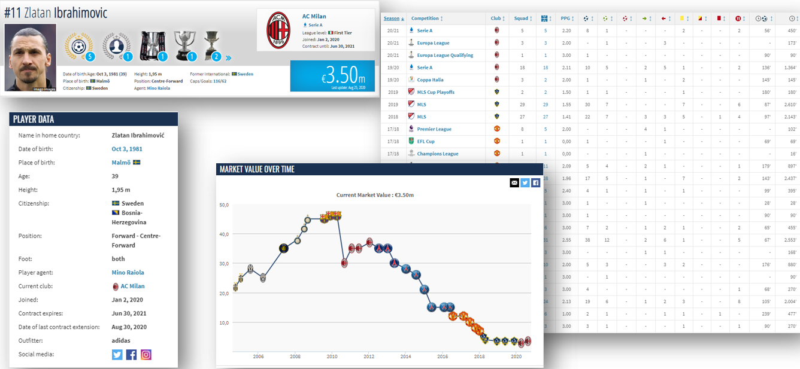Футбольні питання
Як оцінюється майстерність, цінність та ефективність гравців?
Формування ціни на гравців?
Ефективність трансферів?
Ефективність гравців з плином часу та віку?
Кореляція позиції з ефективністю?
ДЕМОГРАФІНЧІ ПИТАННЯ
Правші живуть довше ніж лівші?
Як часто люди повертаються жити в місце, де вони народилися?
Як змінилася зріст та вага населення в цілому?
Заробітна платня відображає минулу, сучасну та майбутню результативність?
IMDb: база даних фільмів

IMDb: база даних акторів
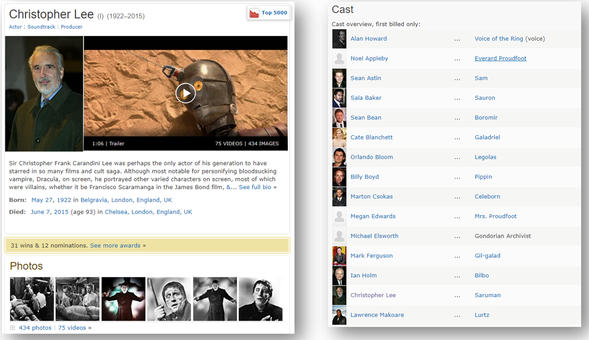ПИТАННЯ IMDb
Які актори приймали участь у найбільшій кількості фільмів?
Заробляли більше грошей?
Приймали участь фільмах з низьким рейтингом?
Мали найдовшу кар’єру?
Який фільм має найвищій рейтинг за визначений рік?
Які фільми втратили найбільшу кількість грошей?
ПИТАННЯ ЩОДО КІНОБІЗНЕСУ
Чи корелює касовий збір з рейтингом глядачів?
Порівняння Голівуду та Болівуду у розрізі рейтингів, бюджету, касового збору
Розподіл акторів по віку у фільмах? Наскільки частіше молоді акторки грають дружину, ніж актори чоловіків? З часом цей показник зменшується чи збільшується?
Кінозірки живуть довше звичайних акторів або загальної публіки?
N-ГРАММИ GOOGLE
Щорічні часові ряди кожного популярного слова або словосполучення від 1 до 5 слів, що зустрічається у відсканованих книгах
«Популярне» означає, що зустрічається і більш ніж 40 книгах
Охоплює приблизно 15-20% усіх виданих книг
N-ГРАММИ GOOGLE
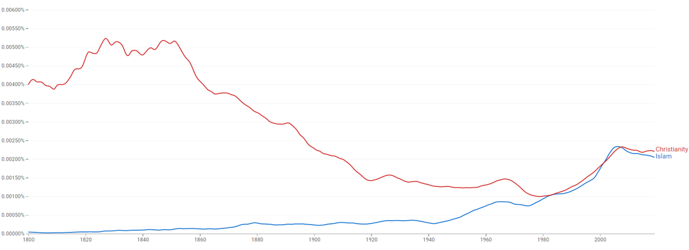N-ГРАММИ GOOGLE
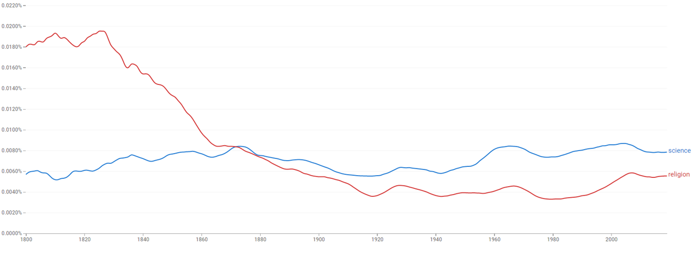N-ГРАММИ GOOGLE
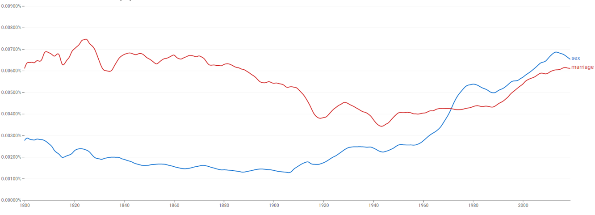ПИТАННЯ N-ГРАММИ GOOGLE
Як змінилося вживання певних слів з часом?
Як часто нові слова стають популярними?
Як вплинули нові стандарти перевірки орфографічних помилок в еру автоматизованої перевірки правопису?
ТАКСІ NY
Дані про водія/власника, місце посадки/висадки та вартість проїздки.
Дані отримані в Нью-Йорку на запит згідно Закону про свободу інформації
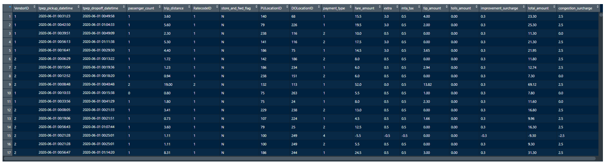
ПИТАННЯ ТАКСІ NY
Заробіток водіїв вночі? Як далеко вони їздять?
На скільки повільніший рух у часи пік?
Куди їдуть люди у різні часи доби?
Які водії отримують більше чайових? Від чого це залежить?
ВІЗУАЛІЗАЦІЯ ТАКСІ NY
Терміни навколо Data Science
ТЕРМІНИ НАВКОЛО DATA SCIENCE
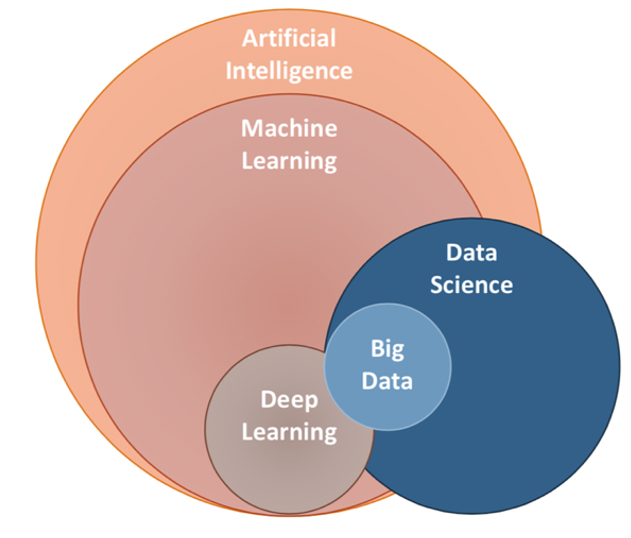ТЕРМІНИ НАВКОЛО DATA SCIENCE
Штучний інтелект (Artificial Intelligence) - область, присвячена створенню інтелектуальних систем, що працюють і діють як люди. Її виникнення пов’язане з появою машин Алана Тьюринга в 1936 році. Незважаючи на довгу історію розвитку, штучний інтелект поки що не здатний повністю замінити людину в більшості областей. Але є приклади, що демонструють позитивну тенденцію розвитку цього напрямку.
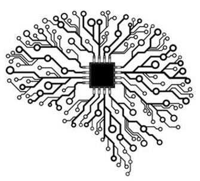
ТЕРМІНИ НАВКОЛО DATA SCIENCE
Машинне навчання (Machine learning) - інструмент для отримання знань з даних. Моделі ML навчаються на даних самостійно або поетапно: навчання з учителем на підготовлених людиною даних і без вчителя - робота зі стихійними, зашумленими даними.
Машинне навчання
Класичне навчання
Ансамблеві моделі
Навчання з підкріпленням
Нейромережі та глибоке навчання
Класичне навчання
1. Класифікація. Намагання поставити мітку на елемент з дискретного набору можливостей: передбачення переможця спортивного змагання (команда А або команда Б) або вибір жанру деякого фільму (комедія, драма, бойовик тощо).
Ціна акції завтра буде вищою чи нижчою за сьогоднішню?
Чи є має сенс продавати страховий поліс даному клієнту?
Яка група клієнтів зреагує на рекламну пропозицію?
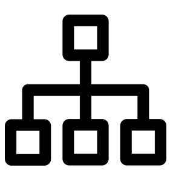
Класичне навчання
2. Регресія. Задача передбачення деякого числового значення. Прогноз ваги людини, кількість клієнтів на добу тощо.
Що буде з ціною акції завтра?
Як довго людина буде жити?
Як часто клієнт користується послугою?
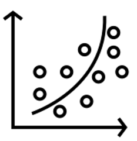
Deep learning
Глибоке навчання (Deep learning)- створення багатошарових нейронних мереж в областях, де потрібно більш просунутий або швидкий аналіз, і традиційне машинне навчання не справляється. «Глибина» забезпечується деякою кількістю прихованих шарів нейронів в мережі, які проводять математичні обчислення.
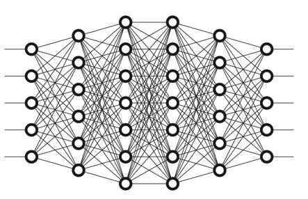
Big Data
Великі дані (Big Data) - робота з великим об’ємом часто неструктурованих даних. Специфіка сфери - це інструменти і системи, здатні витримувати високі навантаження.
BIG DATA
Проблеми з BIG DATA:
Ріст об’єму даних уповільнює їх аналіз
Великі набори даних складніше візуалізовувати
Прості моделі не потребують великих даних
BIG DATA
Twitter: 600+ млн. твітів на день
Facebook: 600+ ТБ даних на день
Google: 3,5+ млрд. пошукових запитів на день
Instagram: 55+ млн. фото на день
Apple: 130 млрд. завантажень додатків
Netflix: 125 млн. годин шоу та фільмів щодня
E-mail: 205+ млрд. повідомлень на день.
BIG DATA
Розглянемо задачу виміру соціального ставлення до публікацій у соціальній мережі або на онлайн-сайті:
- Необ’єктивність вибірки.
- Спам, фальсифікація тощо
- Надмірність, повторюваність
- Чутливість до часу
BIG DATA: 5V
Для того щоб масив інформації отримав приставку «BIG», він повинен мати наступні властивості:
Об’єм (volume)
Різноманітність (variety)
Цінність (value)
Швидкість (velocity)
Достовірність (veracity)
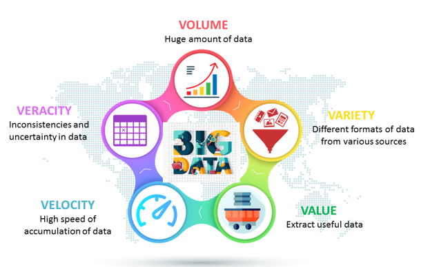
Основні джерела Big Data:
Інтернет – соціальні мережі, блоги, сайти, ЗМІ, форуми тощо
Корпоративна інформація – архіви, транзакції, бази даних, CRM-системи
Показники вимірювальних пристроїв – метеорологічні прилади, датчики мобільного зв’язку тощо
ВЛАСТИВОСТІ ДАНИХ
Структуровані
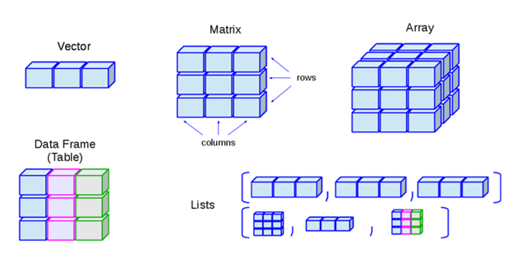ВЛАСТИВОСТІ ДАНИХ
Неструктуровані
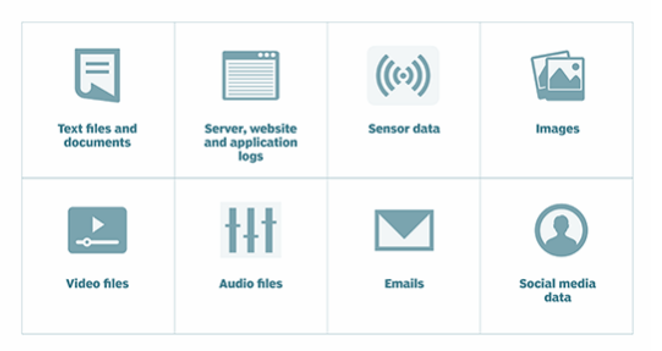ВЛАСТИВОСТІ ДАНИХ
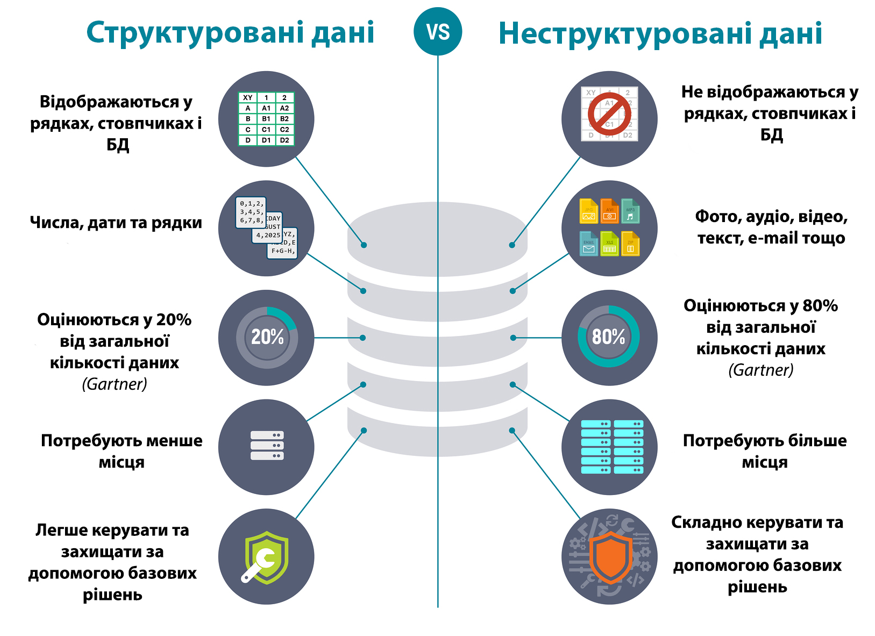Типи даних
ТИПИ ДАНИХ
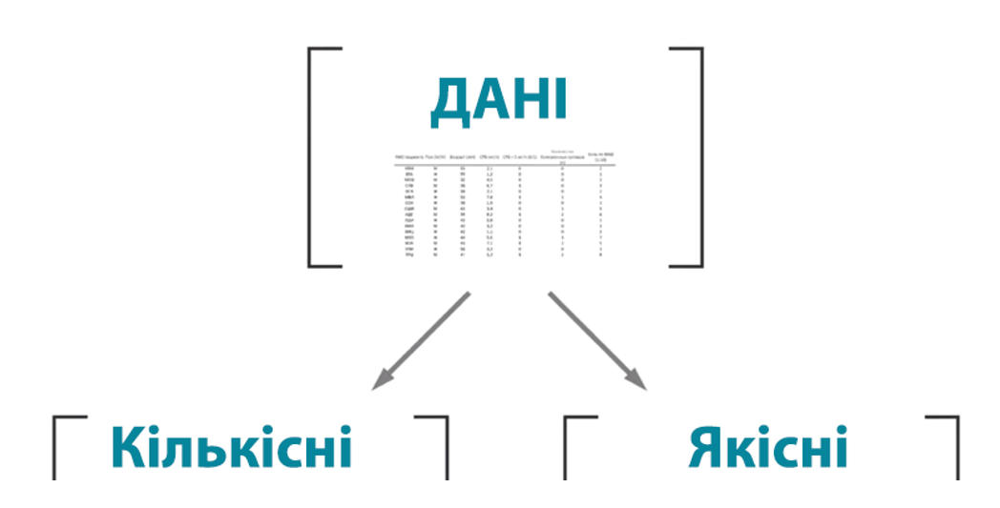ТИПИ ДАНИХ
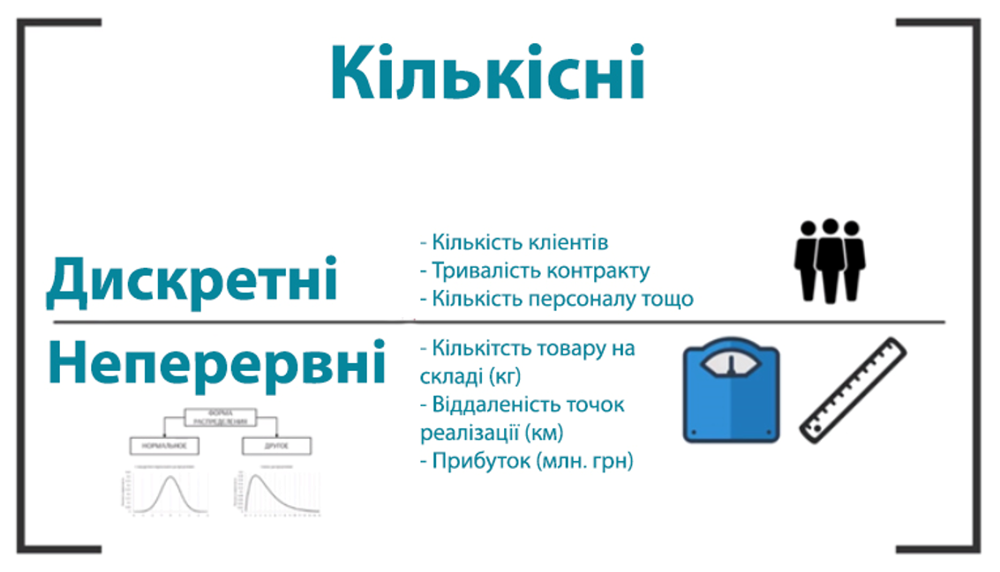ТИПИ ДАНИХ
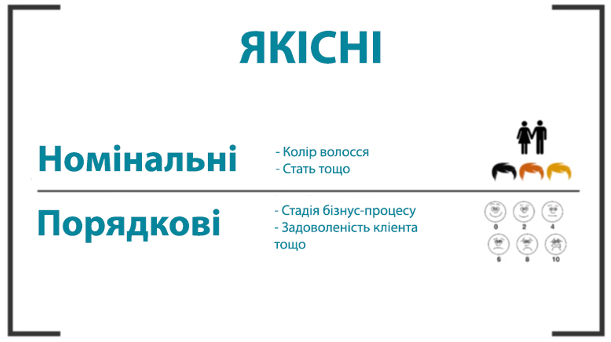Основні інструменти Data Science
ОСНОВНІ ІНСТРУМЕНТИ DATA SCIENCE
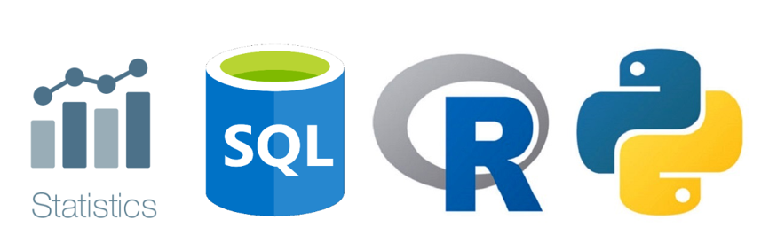ОСНОВНІ ІНСТРУМЕНТИ DATA SCIENCE
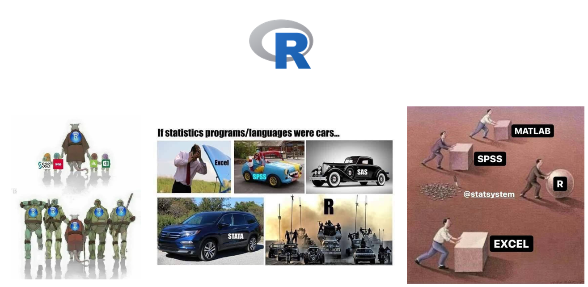ОСНОВНІ ІНСТРУМЕНТИ DATA SCIENCE
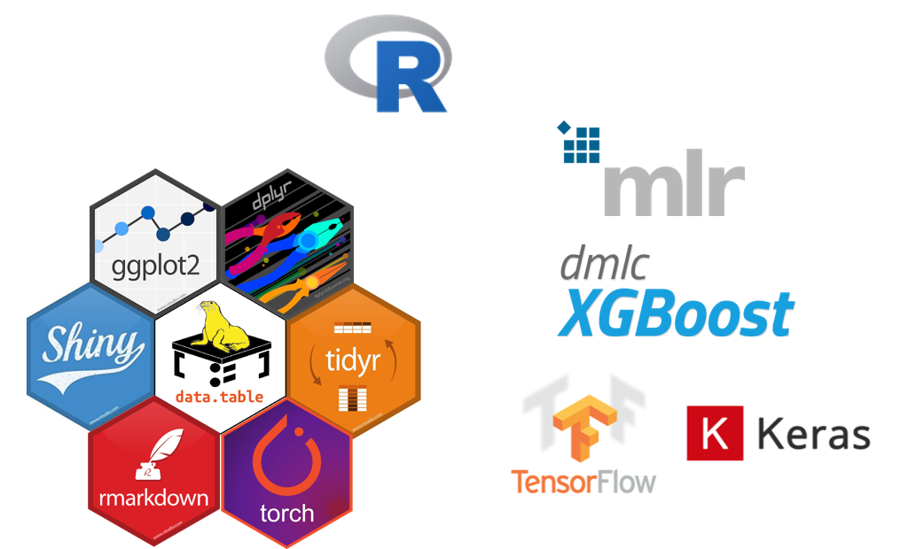ОСНОВНІ ІНСТРУМЕНТИ DATA SCIENCE
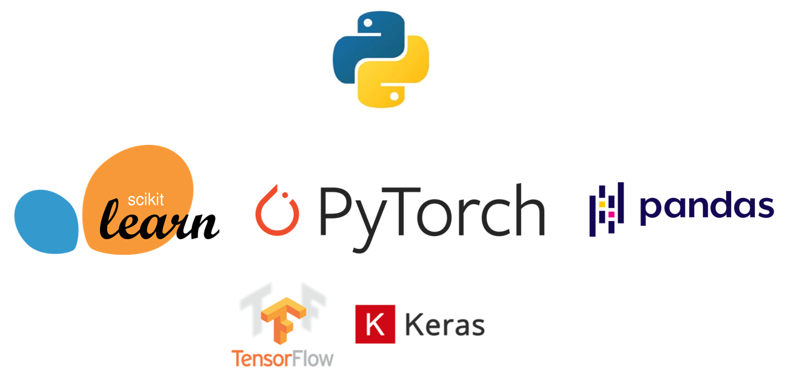Майбутнє Data Science
1. Вибух даних
Ми потопаємо у даних!
Howe and Greg Wilson
https://github.com/rstudio/conf20-future-dse
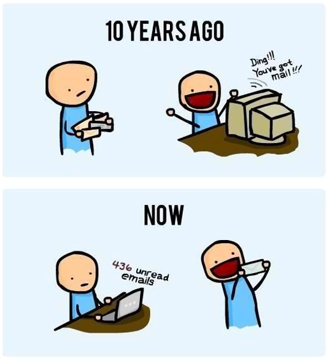
«90% даних світу було створено за останні 2 роки»
IBM Marketing Cloud, «10 Key Marketing Trends»
Закон Мура не працює у розрізі зростання даних
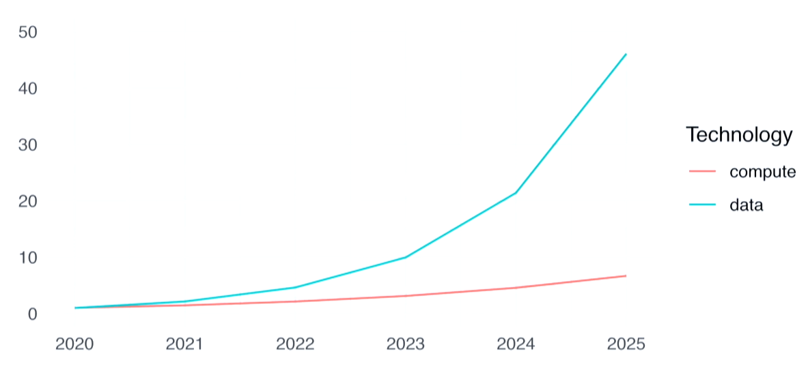2. Невідтворюваність результатів
Довіра до науки занепадає
2. Невідтворюваність результатів
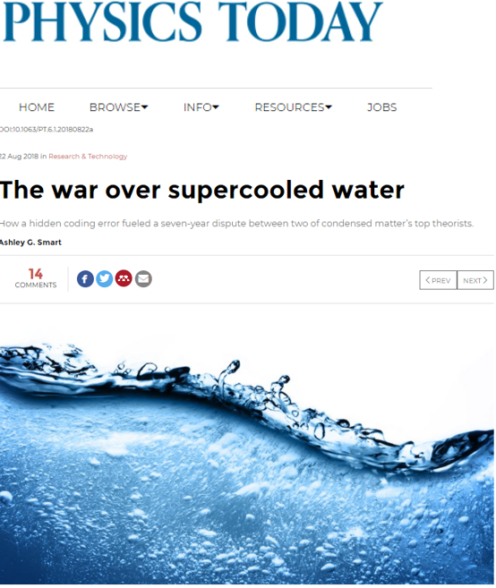2. Невідтворюваність результатів
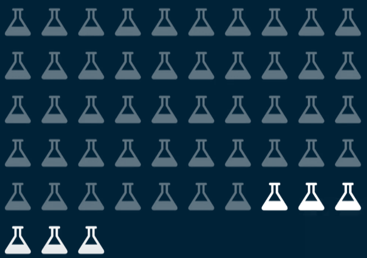Amgen 2012: 6 з 53 значних результатів можна відтворити
2. Невідтворюваність результатів
Психологія
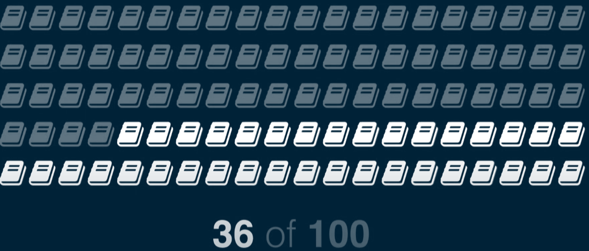2. Невідтворюваність результатів
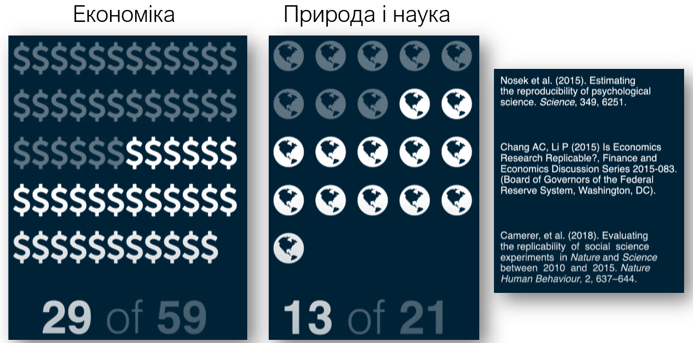2. Невідтворюваність результатів
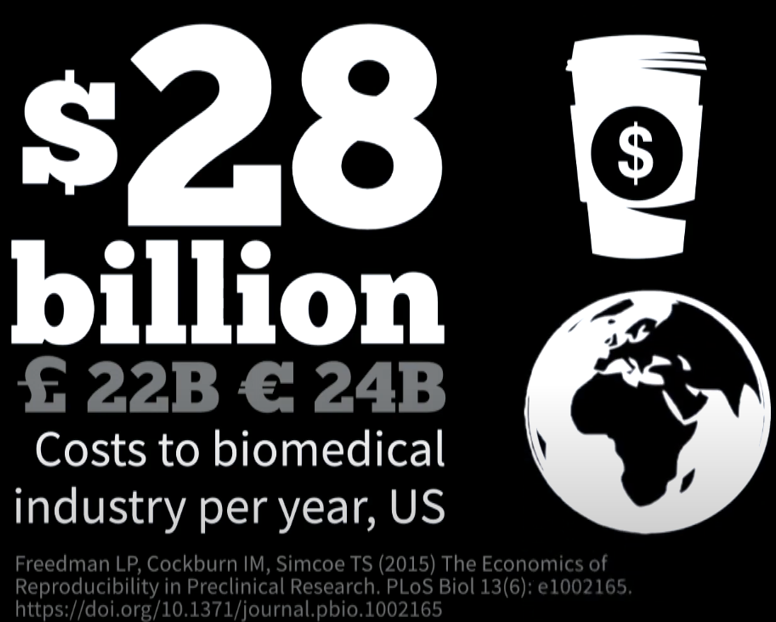3. Підроблені дані
Дані стали ще одним засобом брехні
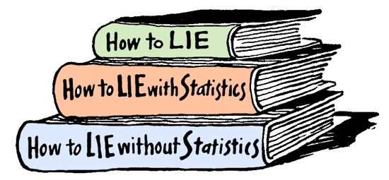
МАЙБУТНЄ DATA SCIENCE
МАЙБУТНЄ DATA SCIENCE
МАЙБУТНЄ DATA SCIENCE
МАЙБУТНЄ DATA SCIENCE
МАЙБУТНЄ DATA SCIENCE
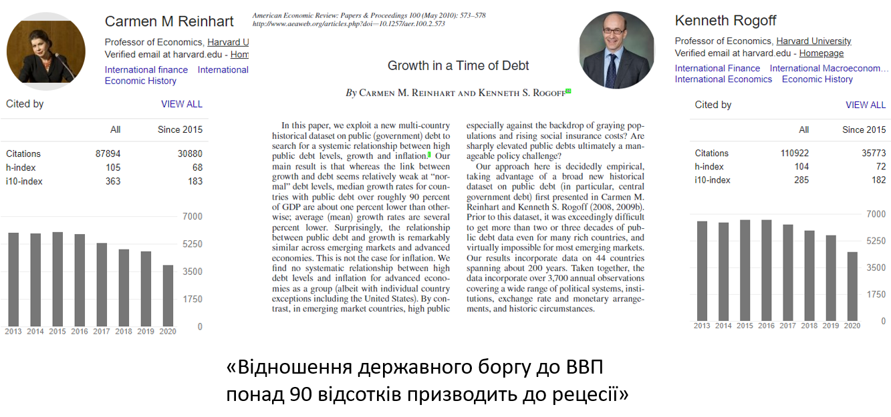МАЙБУТНЄ DATA SCIENCE
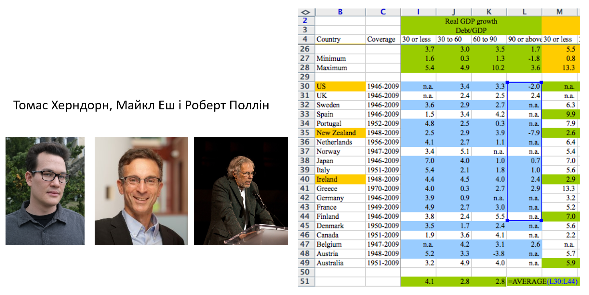Дякую за увагу!
ihor.miroshnychenko@kneu.ua